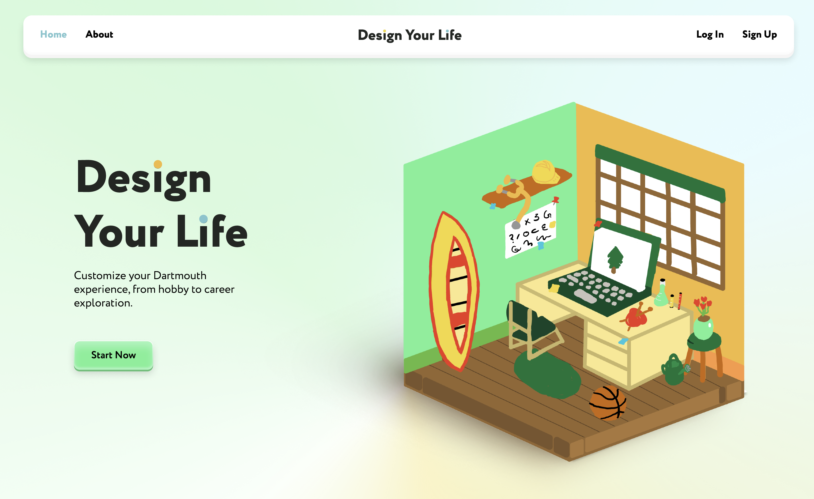
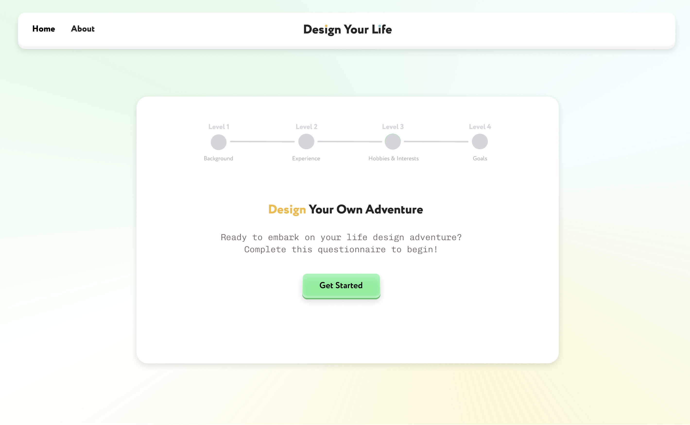
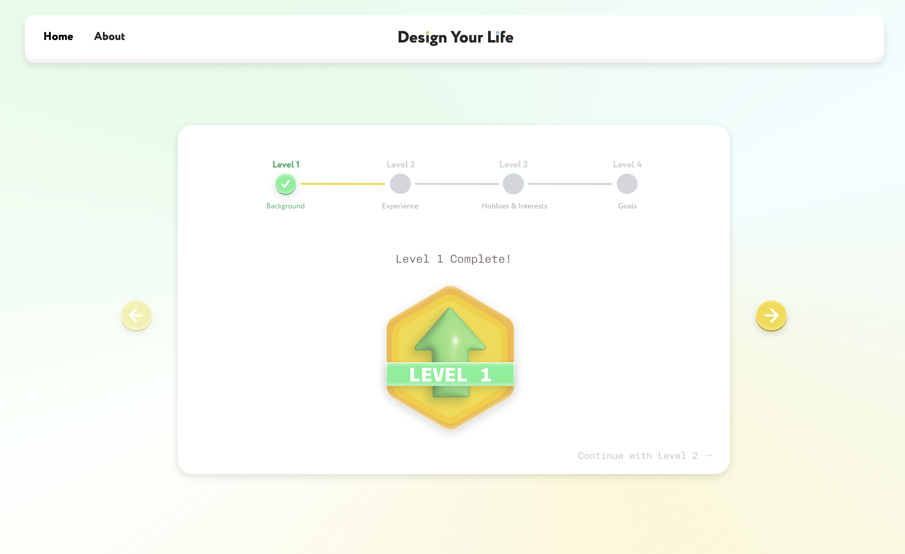
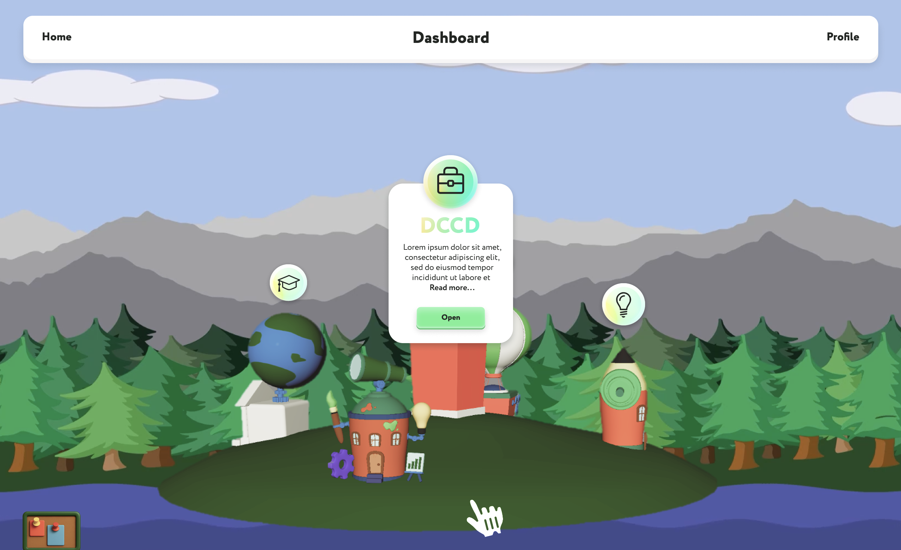
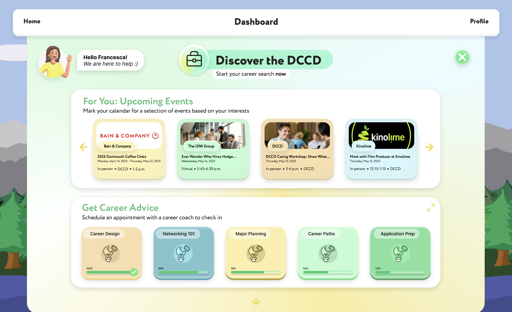
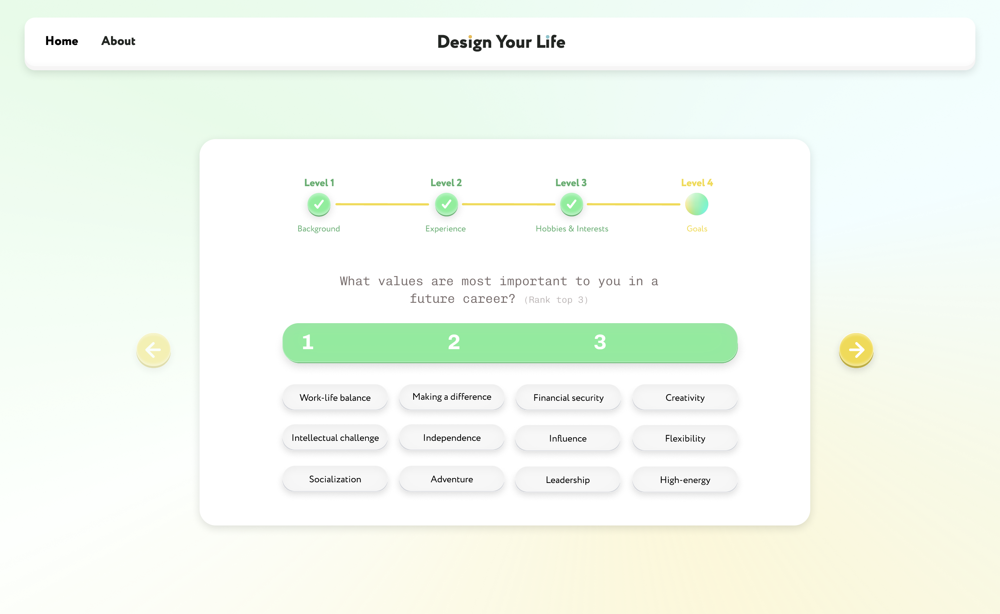
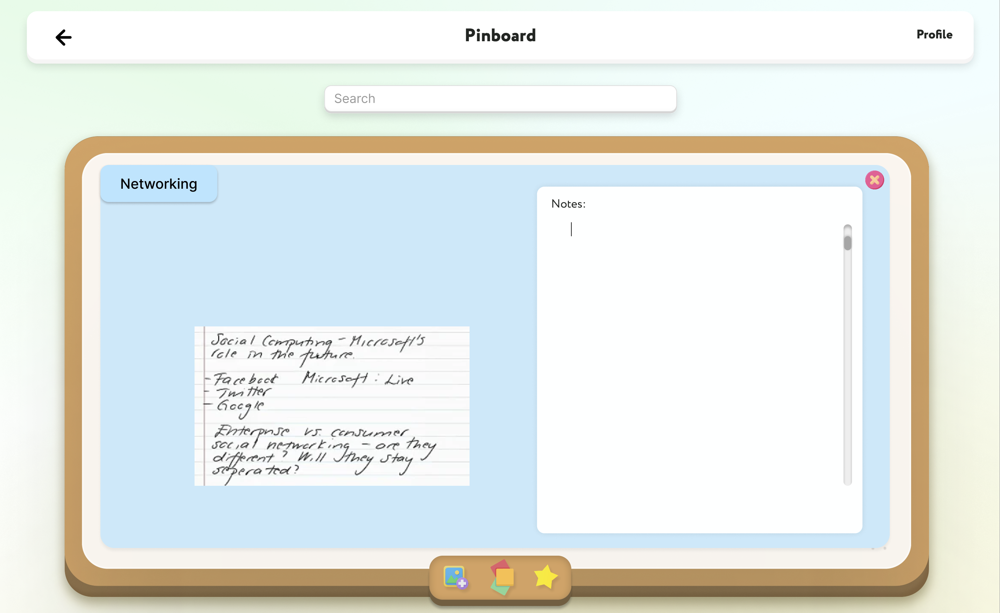

DartWorld
- Author
- Seth Looper
- My role
- Lead designer and program lead, as Dartmouth staff
- Past collaborators
- Lin Liu, Xiaoxi Tan, Tianyi Tan (2025)
- Build team
- Student developer teams from Dartmouth's DALI Lab (2024-2026)
- Setting
- A Dartmouth program the author designed and ran as staff; no institutional endorsement implied
- Period
- 2024-2026
- Cohort
- Pilot participants; rolling deployment, 2024-2026
- Status
- Concluded
- Addresses
- RQ 1 · RQ 2
- Methods used
- Archetype clustering, Longitudinal journaling, Spatial mapping
What this report argues, how far the evidence currently goes, and what would settle it. Nothing here has been tested with students in a formal study; the claims are design rationale.
Most career offices work the same way: a student walks in, talks for thirty minutes, and leaves with a to-do list. That works if you already know what you want. Most students don't.
At Dartmouth, students show up well-prepared academically but without much practice thinking about who they are outside a transcript. The tools they get, personality quizzes, job boards, alumni directories, assume you already know yourself. They treat identity as something fixed, not something you figure out over time. There was no place designed for the slower work of sorting through what matters to you.
The question was whether a digital environment could help students do that kind of thinking across an entire term.

DartWorld has three parts: a reflective onboarding quiz, a 3D world you can walk through, and a journal where you track how your thinking changes. Each piece was built separately, tried with students, and then connected to the others.
DartWorld rests on a small number of frames from identity development, transformative learning, and design pedagogy.
The three onboarding archetypes (Explorer, Seeker, Achiever) are a deliberate simplification of James Marcia's identity statuses (Marcia, 1966), the foundational four-state vocabulary in adolescent identity research. I collapsed the four into three to keep the onboarding light, and named them in language a Dartmouth undergraduate would use without resistance. The archetypes are starting positions: emergent design categories a student can revise. (My Career development as learning note has more on why categorical-but-revisable labels matter.)
The onboarding is engineered to produce a small disorienting dilemma (Mezirow, 1997): the moment when a student's self-image and the archetype they land on disagree, and they have to do work to integrate the gap. Mezirow's transformative-learning framework predicts that reflection starts in this disagreement. The onboarding flow is built around producing it.
The 3D navigable environment over a scrollable list comes from two places at once: Burnett & Evans's Designing Your Life (2016) and its wayfinding metaphor (careers as a landscape to walk through), and the broader observation, documented in my Maps over lists note, that the first-three-result attention attractor is what makes traditional career tools fail at exploration.
The longitudinal journaling pinboard treats career deliberation as experiential learning in the Kolb sense (Kolb, 1984): concrete experience → reflective observation → abstract conceptualization → active experimentation, on a multi-term clock. The whole platform's developmental target is Baxter Magolda's self-authorship (Baxter Magolda, 2001): the capacity to author your own life rather than receive it.
The full set of cited works is in the working paper.





I built DartWorld with student developer teams from Dartmouth's DALI Lab (2024-2026), a student-led technology lab that pairs undergrads with project leads on products. The development team changed every term, roughly every ten weeks. Each new group of student developers picked up where the last one left off, working from a design brief shaped by the previous round's design review.
That constraint turned out to be useful. No single team could hold the whole system in their heads, so the design had to be modular. Decisions had to be written down. And each ten-week cycle became a design-iteration unit: ship a version, observe how students use it through my informal review as facilitator, document what is and isn't working, and redesign for the next cycle.
Over multiple terms, the onboarding flow, navigation, and data architecture changed substantially. Each revision came from design review and my own use of the platform with students in my programs, not from a human-subjects study.
A few patterns that surfaced in design review across iterations. Each is a design-rationale claim the working paper documents in §5; whether they hold at the strength implied has not been tested.




DartWorld ran at Dartmouth College from 2024 to 2026 and has concluded. The platform went through multiple major development cycles with DALI student developer teams and was deployed across multiple academic terms. Whether the archetype a student chooses during onboarding shapes the reflection they do over the rest of the term remains an open question; it was not studied.
The project also produced two standalone tools, the reflective onboarding quiz and the journaling pinboard, that were used on their own in other programs.
Looper, S. (2026c). A Place to Walk Through: Spatial Narrative Platforms for Sustained Career Reflection at Cohort Scale. Lo/Be Lab Working Reports, 2026-03. [pdf]
See the full abstract on the publications page.
Material on this site may be cited and reused under CC BY-NC 4.0, with credit to Lo/Be Lab.
For citation requests, collaborations, or pushback on a published claim, seth.looper@gmail.com. Site licensed under CC BY-NC 4.0.